地政学
ホルムズ海峡に近い湾岸で、イラン、インド、東アフリカ、欧州、東アジアを結ぶ交易の中継点です。連邦内ではアブダビと役割を分け、政治の中心ではなく商業と接続性で存在感を保つ湾岸都市として読む視点です。

🇦🇪 アラブ首長国連邦 / アジア / World City Atlas
湾岸の入江から空港、港湾、自由区、高層住宅、砂漠観光までを束ねる、交易と移住の都市です。
都市の骨格
ドバイは石油都市というより、港、空港、自由区、観光、不動産、移民労働を組み合わせて成長した商業都市です。
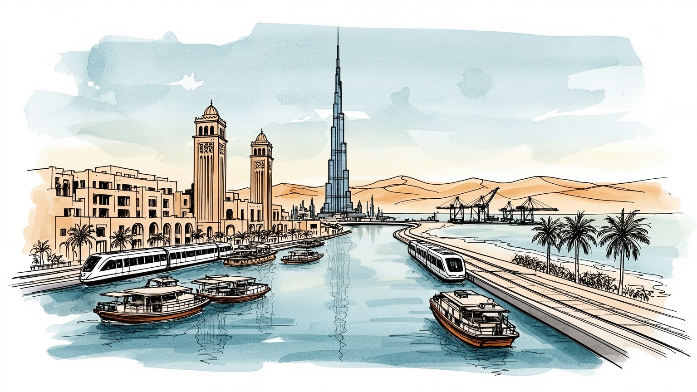
ホルムズ海峡に近い湾岸で、イラン、インド、東アフリカ、欧州、東アジアを結ぶ交易の中継点です。連邦内ではアブダビと役割を分け、政治の中心ではなく商業と接続性で存在感を保つ湾岸都市として読む視点です。
空港、港湾、自由区、金融、不動産、観光、展示会が成長を支え、建設、清掃、警備、家事、飲食を担う移民労働が日常を動かします。華やかな都市像は契約と送金の労働現場へ深く依存する重要な構造でもあります。
イスラムを基盤に首長家の統治と部族的な記憶が残り、同時に南アジア、フィリピン、欧州、アラブ諸国の生活文化が交差します。礼拝、断食、食卓、音楽、祝祭の作法が多国籍都市の節度を形づくる都市の日常です。
高層住宅、モール、海岸、砂漠ツアー、旧スーク、人工島が観光の表情を作る一方、家賃、通勤、暑さ、労働者宿舎、教育、買い物が暮らしを左右します。便利さと格差が近距離で並ぶ湾岸都市の毎日の現実でもあります。
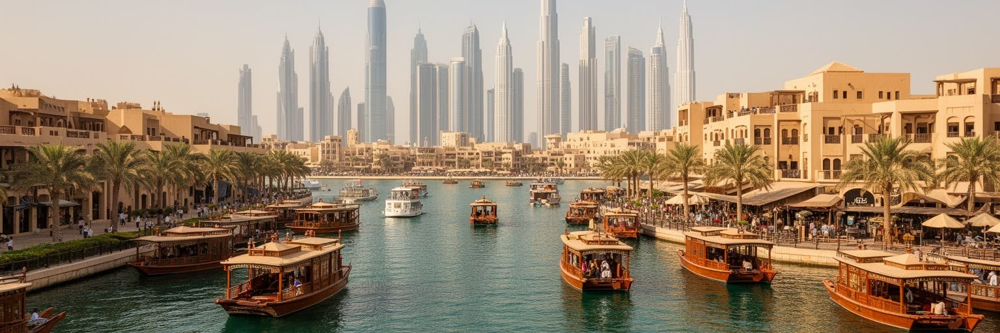
ドバイの都市史は、超高層ビルの足元よりも先に、ドバイ・クリークと呼ばれる入江の水際から始まります。浅い入江は真珠採り、漁業、木造船の交易、周辺砂漠の集落をつなぐ場所であり、ペルシャ湾を渡る商人や船員を受け入れました。現在もアブラの船外機の音、香辛料の匂い、金店の照明、荷を運ぶ台車が、古い商業都市の感覚を残しています。地図上では小さな湾岸都市に見えても、インド洋、イラン南岸、オマーン、東アフリカ、南アジアとの往来が早くから日常に入り込んでいました。巨大空港や人工島で知られる現在の姿も、旧市街の水上交通、スーク、倉庫街、路上の小さな両替や携帯修理の商いと切り離せません。石油収入は成長の初期資金になりましたが、都市の軸は地下資源を掘ることより、物、人、資本、情報を通過させることに置かれてきました。クリーク周辺の古い街区と高層帯をつなげて見ると、水際の交易が航空と金融の結節点へ拡張した過程が見えます。海は景観ではなく、移動、税制、外交、労働力の入口であり、急成長した都市に人間的な尺度を残す基盤です。夕方の水辺では観光客、買い物客、仕事帰りの店員が交差し、古い船着き場の低い視線から高層都市を眺め直せます。潮の匂いと市場の声が重なる場所に、未来都市と呼ばれる街の起点が今も残っています。街の厚みです。
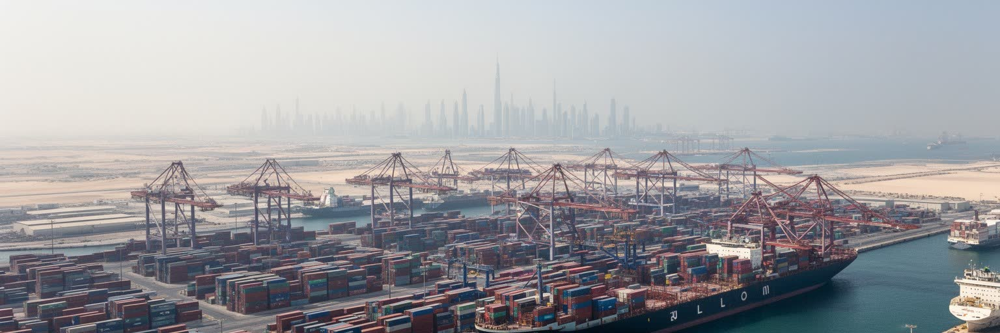
ジュベル・アリ港は、ドバイを湾岸の商業都市から世界の物流網に組み込む装置です。大型コンテナ船、倉庫、保税区、再輸出業、軽工業、船舶サービスが一体化し、湾岸諸国、南アジア、アフリカ、欧州へ向かう荷物がここで組み替えられます。港に隣接する自由区は、外資が拠点を置きやすい制度、税制、通関、労働力の組み合わせを提供し、単なる荷役の場所ではなく企業活動の舞台になりました。ドバイの産業は製造業の厚みだけで測れず、在庫を短時間で動かし、法制度の違う地域をつなぎ、展示会や金融、保険、航空貨物と接続する能力に価値があります。倉庫から出る食品、建材、家電、香辛料は、モールの棚、ホテルの厨房、路上の小さな食堂、学校給食まで届きます。一方で、物流都市は外部の景気、紛争、海上交通の緊張、燃料価格に強く左右されます。コンテナの背後には、通関書類を扱う事務職、在庫を管理する労働者、船を動かす技術者、道路で貨物を運ぶ運転手がいます。港の強さは大型施設だけでなく、遅れを許さない細かな手順と、暑さの中で続く実務に宿ります。展示会場で契約された商品が港の倉庫へ流れ、再輸出の伝票とともに別の市場へ向かう循環もあります。港湾の速度は、街の飲食、建設、買い物を目に見えないところで支えています。この実務が日常の棚と食卓を満たします。
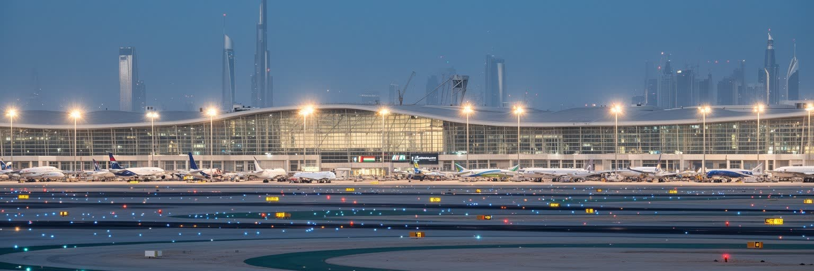
ドバイ国際空港と航空会社のネットワークは、都市の規模を越えた影響力を生み出しています。欧州、アフリカ、南アジア、東南アジア、豪州を結ぶ中間地点にあり、乗継客、観光客、出張者、航空貨物が昼夜を問わず移動します。空港は滑走路だけではなく、ホテル、免税商業、整備、ケータリング、保安、物流、求人、観光宣伝が重なる巨大な都市装置です。深夜でも出発案内の電子音、香水売り場の匂い、手荷物カートの車輪音が続き、都市全体の時間を少し眠らない方向へ傾けます。航空の成功は、ドバイを目的地にするだけでなく、世界の移動時間を短く編集することで成り立ちます。遠い市場同士を一泊以内で結べることは、展示会、金融、不動産販売、医療、教育、スポーツイベントにも波及します。航空労働には操縦、整備、管制だけでなく、清掃、警備、荷役、接客、宿泊の多層の仕事があります。空港周辺には貨物施設、ホテル、従業員住宅、道路網が広がり、早朝便へ向かう通勤バスとタクシーが街のリズムを作ります。空港は都市の玄関であり、同時に休まない職場でもあります。到着ロビーでは家族の再会、出稼ぎ労働者の帰省、留学生の出発、観光客の短い滞在が重なります。空港音は都市の背景音であり、遠い場所と日常をつなぐ合図でもあります。旅の高揚と労働の疲れが同じ床にあります。
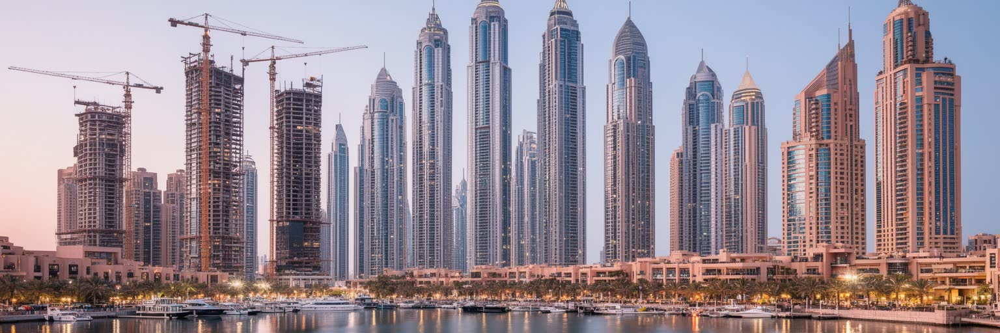
ドバイの高層景観は、国家の宣伝だけでなく、土地、信用、外国資本、移住者の期待が形として都市に現れています。砂漠沿いの道路に沿って超高層ビルが並び、人工島、マリーナ、モール、ホテル、オフィス、分譲住宅が都市の象徴になりました。不動産は観光と金融を引き寄せ、外国人が住み、働き、投資する入口になる一方、投機、過剰供給、債務、価格下落のリスクも抱えます。高層住宅の足元には保育施設、国際学校への送迎車、クリニック、宅配バイク、夜遅くまで開くスーパーが集まり、家族の暮らしは眺望より細かな設備に左右されます。モールは買い物の場であり、暑い午後に子どもや高齢者が歩ける空調付きの広場でもあります。高層建築は成功物語を見せる強い装置ですが、空室、管理費、労働者宿舎、郊外通勤、建設現場の安全を同時に考えなければ都市の実像はつかめません。住宅は資産であり、ホテルは観光商品であり、オフィスは国際企業の看板でもあるため、同じ建物が複数の経済を支えます。建物の完成速度は都市の勢いを示しますが、長期的な維持管理、修繕、空調費、家賃上昇は住民の生活に残り続けます。夜の窓明かりには単身赴任、家族滞在、短期賃貸、投資物件が混ざり、同じタワーでも暮らしの時間はそろいません。スカイラインは華やかな広告であると同時に、毎月の家計簿にもつながっています。
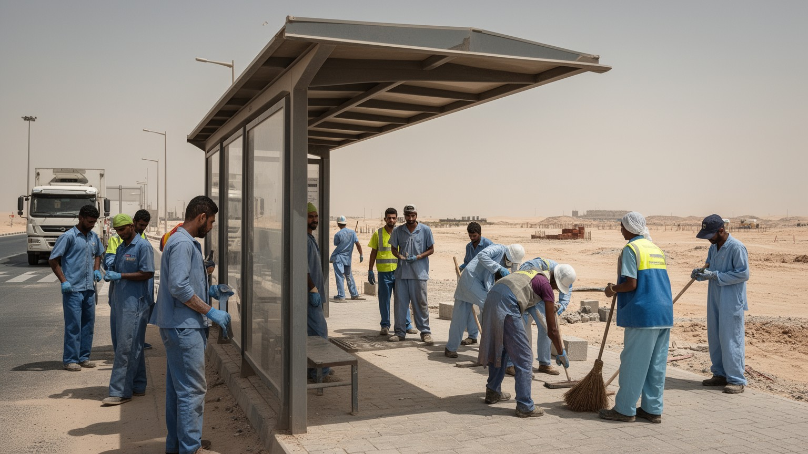
ドバイの人口の大部分は外国人であり、都市の日常は移民労働なしに成り立ちません。南アジア、東南アジア、アフリカ、アラブ諸国、欧州から来た人びとが、建設、清掃、警備、家事、飲食、物流、ホテル、金融、医療、教育で働きます。高所得の専門職と低賃金の現場労働者は同じ都市に暮らしますが、住む場所、移動手段、休日の過ごし方、家族を呼べるかどうかは大きく異なります。週末にはクリケットをする労働者、サッカー中継を囲む食堂、送金店の列、安い理髪店や携帯修理の小商いが、観光写真とは別の都市を作ります。雇用主や在留資格に依存しやすい制度は、仲介料、賃金遅配、パスポート管理、労働時間、宿舎環境をめぐる問題を生みやすいです。近年は改革も進みますが、都市が安い労働力を前提に成長してきた構造は簡単には変わりません。送金は労働者の家族と故郷を支え、ドバイの建物は遠い村や都市の生活ともつながっています。清潔なモールやホテル、整った道路の背後には、暑さの中で働く人びとの身体があります。労働者の宿舎、バス移動、休日の集まり、契約の不安を地図に載せることで、街の輪郭は立体的になります。小さな食堂のカレー、甘い茶、夜の公園での会話は、働く人が都市に自分の居場所を作る方法でもあります。そこには厳しい労働と同時に、友情や故郷への誇りもあります。
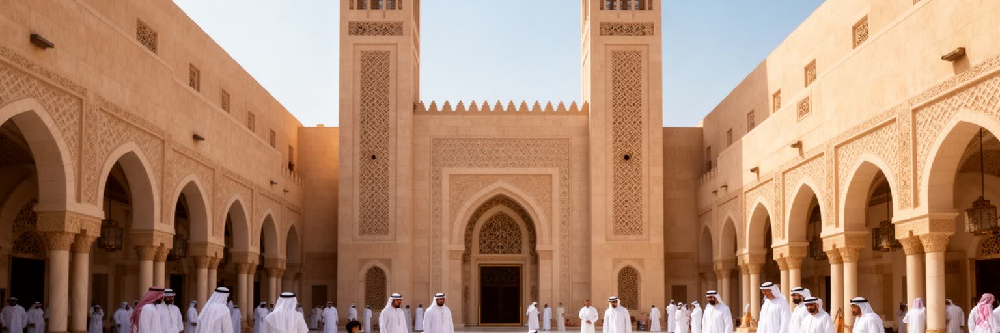
ドバイは国際都市である前に、アラブ首長国連邦の一首長国であり、イスラムを基盤とする社会です。首長家の統治、部族的なつながり、アラビア語、ラマダン、モスク、家族と名誉の感覚は、外国人が多数を占める街でも都市の規範を支えています。観光や商業の自由度は高いですが、公共空間での振る舞い、宗教行事への配慮、飲酒、服装、政治的発言には独自の線引きがあります。ラマダンの夕方にはイフタールの食卓が広がり、Eidには家族の訪問、贈り物、香水、菓子が街の時間を変えます。首長国民は数としては少数ですが、公務、土地、国家企業、教育、文化政策を通じて都市の方向を決める立場にあります。歴史的な家屋、鷹狩り、ダウ船、真珠採りの記憶は、急成長する都市が自分の起点を忘れないための文化資源でもあります。イスラムは礼拝の時間だけでなく、商取引、慈善、食、祝祭、家族生活に入り込み、国際的な消費文化を抑制しながら形づくります。金曜の礼拝、断食明けの市場、家族向け空間の設計は、商業都市にも宗教的な時間が流れていることを示します。外国人が多数派であっても、都市の礼儀と法制度は首長国の価値観を基準にしています。夜にはアラブ音楽、南アジアの歌、ホテルのラウンジ、家族向けの祝祭が別々の場所で響きます。音の重なりは自由さだけでなく、節度の中で共存する都市文化を伝えます。
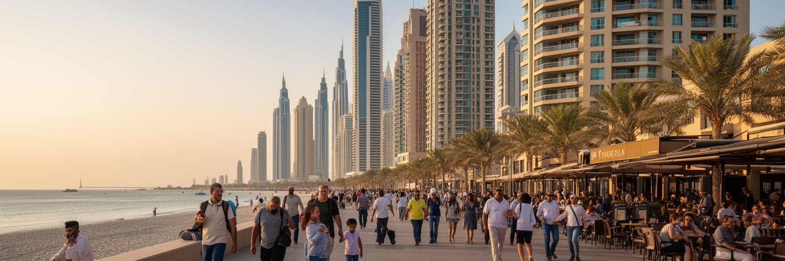
ドバイの街を歩くと、英語、アラビア語、ヒンディー語、ウルドゥー語、タガログ語、ロシア語、フランス語などが交差し、居住者の多くが一時的または長期の外国人として暮らしています。国際学校、私立病院、サービスアパートメント、ビザ付き雇用、送金店、各国料理、宗教施設が、多国籍な生活の基盤を作ります。子どもは英国式、インド式、国際バカロレアなどの学校へ分かれ、高齢の親を呼び寄せる家庭は医療保険、住宅、暑さへの対応を細かく考えます。高所得の駐在員は湾岸の安全、税制、空港接続、住宅設備を評価し、低賃金労働者は限られた休日と共有住宅、通勤バス、送金に生活を集中させます。外国人の多さは、飲食、音楽、スポーツ、教育、宗教行事に多様性を与え、各国コミュニティの独立記念日、教会行事、学校祭、クリケット観戦が週末の予定になります。ドバイの国際性は華やかな表面だけでなく、帰国、契約更新、子どもの進学、親の介護、為替、故郷への送金といった個人的な計算の積み重ねでできています。多国籍であることは交流の豊かさを生む一方、帰属の不確かさを抱えた生活でもあります。夕食の選択肢にはレバノン料理、南インドの定食、フィリピン料理、日本食、エチオピア料理が並び、食卓そのものが都市の人口構成を映します。家族の会話も複数の言語を行き来します。
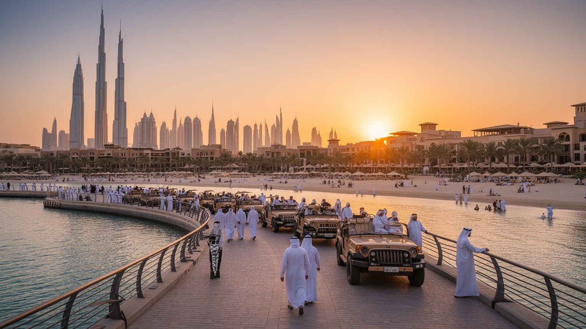
ドバイ観光は、超高層展望台、巨大モール、人工島、海岸リゾート、砂漠ツアー、国際イベント、レストラン、ホテルを組み合わせた都市演出で成り立ちます。歴史的な遺産に頼るだけでなく、新しい景観を短期間で作り、それ自体を目的地にする力があります。高級消費は都市のブランドを強め、航空乗継を滞在へ変え、ホテル、タクシー、飲食、警備、清掃、イベント運営に幅広い雇用を生みます。モールでは高級ブランドだけでなく、フードコート、映画館、屋内水族館、子どもの遊び場、冬のセールが集まり、冷房の効いた散歩道としても使われます。海辺ではジェットスキー、カイトサーフィン、ビーチバレー、ヨットが観光の身体感覚を作り、競馬やゴルフ、サッカー、F1開催地アブダビへ向かう周辺イベントも滞在理由になります。一方で、観光の輝きは所得格差、労働条件、環境負荷、過剰な空調、淡水消費、砂漠生態系への影響を隠しやすいです。旧市街やスークを巡る観光は商業の起点を伝えますが、土産物化された表情も持ちます。贅沢さだけでなく、航空、港湾、不動産、移民労働、国家ブランディングとの結びつきを見ると、観光は都市全体を動かす産業だと分かります。夜のクラブ、屋上バー、家族向けショー、ホテルの音楽は、宗教的節度と商業的娯楽が調整された範囲で並びます。旅行者はその調整された舞台の上を歩いています。
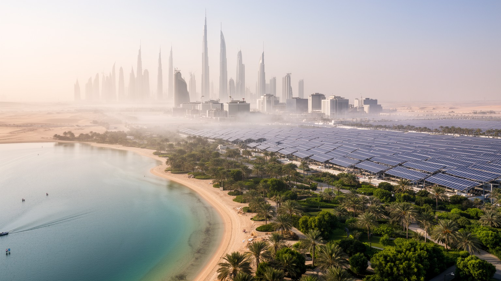
ドバイの都市生活は、水と冷房の管理によって成立しています。夏の気温と湿度は屋外活動を厳しく制限し、建物、駅、車、モール、ホテル、労働者宿舎まで空調が不可欠になります。屋外へ出た瞬間の熱気、眼鏡を曇らせる湿度、冷えたロビーへ戻る安堵は、住民にも旅行者にも共通する感覚です。飲料水や都市の緑化、ホテルのプール、人工湖、洗浄、建設現場には大量の水が必要で、海水淡水化とエネルギー消費が都市の基盤を支えます。湾岸の富は化石燃料経済と結びついてきましたが、気候変動が暑熱、海面上昇、豪雨、砂嵐、電力需要を強めるほど、都市の維持費は増します。暑さは特に屋外労働者、子ども、高齢者に重く、登下校、通院、休憩、水分補給は生活の安全に直結します。緑の街路や水辺の景観は快適さを演出する一方、砂漠環境では資源投入の結果でもあります。きらびやかな建築だけでなく、それを冷やし、洗い、照らし、移動させる水と電力の流れを読む必要があります。冷房された室内と屋外労働の差は、気候リスクが社会階層によって異なる形で現れることを示しています。夏の生活は、屋内遊び場、早朝の海辺、夜の散歩、配達サービスへ時間をずらす工夫でもあります。快適さは技術だけでなく、日々の予定の組み方にも支えられています。冷気の価値は、真夏ほどはっきりします。
ドバイの旧スークは、都市の商業的な原型を今に伝える場所です。金、香辛料、織物、香料、家庭用品が並び、狭い通路では値段交渉、呼び込み、船で運ばれた商品、観光客の買い物が混ざります。サフラン、カルダモン、乳香、干したライムの匂いが重なり、屋外の熱気と店内の冷気を出入りするだけで、モールとは違う買い物の記憶が残ります。整備された高級モールとは違い、スークには小規模商人、南アジア系の店員、イランやオマーンとの交易記憶、クリークを渡る水上交通が残ります。観光地化は進み、商品や価格は訪問者向けに調整されますが、それでもドバイが最初から高層都市だったわけではないことを教えてくれます。旧市街の保存地区には風塔を備えた建築や中庭の生活の記憶があり、暑熱への伝統的な対応も見えます。スークは単なる懐古ではなく、外国人労働者の商売、観光収入、宗教行事、日用品の買い物が続く生きた経済圏でもあります。小さな店の交渉、屋台の茶、船着き場の往来は、巨大開発とは別の速度で都市を動かします。古い市場は、都市の急成長を足元へ引き戻す役割を持ちます。ラマダン前の食材、Eidの衣装、結婚式の金飾りを選ぶ客が増える時期には、宗教暦が商いの季節感を作ります。市場は記念写真の背景ではなく、祝いと生活の準備をする場所です。生活の市場です。
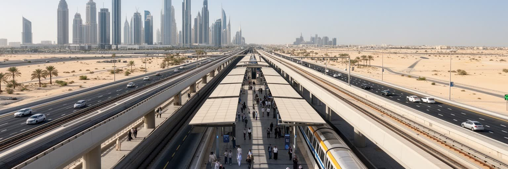
ドバイの都市空間は長い間、自動車と高速道路を前提に広がってきました。高層ビル、郊外住宅、モール、空港、港湾、労働者宿舎が広い範囲に散らばり、暑さもあって歩行者に厳しい場所が多いです。メトロはこうした自動車依存を一部緩和し、空港、中心業務地区、マリーナ、旧市街、住宅地を結ぶ背骨になっています。高架を走る車窓からは、超高層ビルと空き地、建設現場、低層地区、倉庫、道路の広がりが同時に見えます。朝は学校へ向かう子ども、モール勤務の販売員、空港へ急ぐ旅行者、夜はレストランや音楽イベント帰りの若者が同じ車両に混ざります。鉄道は通勤者、観光客、サービス労働者を運び、運転免許や車を持たない人に都市へのアクセスを与えますが、駅から目的地までの距離や炎天下の歩行環境は論点です。バス、タクシー、配車アプリ、徒歩通路、屋内連絡をどう組み合わせるかが、生活の便利さを左右します。公共交通の改善は、低所得の労働者や観光客の移動費を下げるだけでなく、渋滞と排出を抑える手段にもなります。歩道の日陰、駅前の横断、バスとの接続が整えば、都市の距離感はさらに変わります。駅近くの小売や屋台的な軽食、配達員の待機場所も、移動が生む路上経済です。交通を読むことは、誰が街の時間を節約できるかを読むことでもあります。移動は暮らしの入口です。
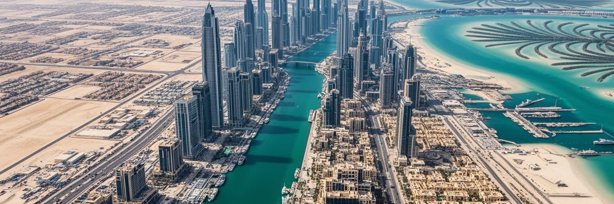
ドバイは、開放性と管理が同時に強い都市です。外国資本、観光客、専門職、労働者を大量に受け入れ、宗教や国籍の異なる人びとが働く余地を広げる一方、政治的な発言、労働運動、公共の抗議、報道、治安には明確な制約があります。安全で効率的な都市という評価は、厳しい規制、監視、行政手続き、ビザ制度、警察力、企業との近い関係によって支えられます。新聞、テレビ、英語メディア、インフルエンサーの発信は都市ブランドを広げますが、語れる範囲は制度の内側で調整されます。都市の成功を高層建築や観光収入だけで測ると、国民と外国人、高所得層と低賃金労働者、中心部と宿舎、冷房空間と屋外労働の差が見えにくいです。ドバイは湾岸の地政学、自由区の制度、港と空港、イスラム文化、移民労働、負債循環、気候リスクを一つの都市体験へまとめる力を持ちます。便利で安全な表面を楽しむだけでなく、その便利さを誰が支え、どの制度が可能にし、どんな沈黙を必要としているのかを読むことが重要です。港湾、空港、モール、宿舎、モスク、スーク、砂漠を連続した要素として見るほど、未来都市の模型ではなく、移動、資本、労働、統治の矛盾が凝縮した湾岸都市として見えてきます。サッカー観戦の歓声、競馬場の華やかさ、空港の電子音、スークの呼び込みを一つの地図に重ねると、都市の魅力と緊張は同じ場所から立ち上がります。